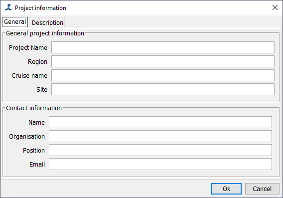
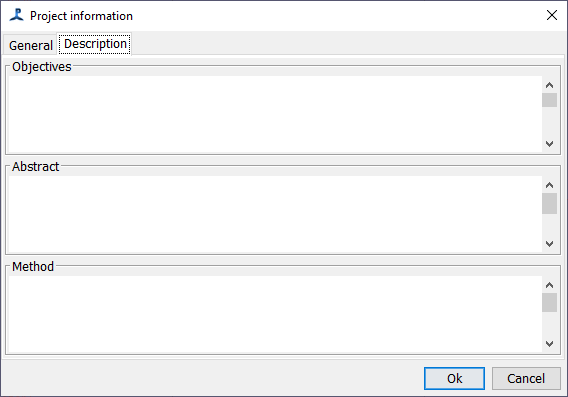

This module has been incorporated as part of developments in 2024 to integrate the
Tethys Database into PAMGuard. The module is so useful, that we've made
this part available in all PAMGuard configurations whether you use Tethys or not.
The module, accessible from the Settings menu offers two panels for entering information about your project. Its worth filling these in, since the information will be saved with your configuration and your data and could prove invaluable when you come back to these data in a few years time.
 